텔레마케팅관리사 (2010-05-09 기출문제)
1과목: 판매관리
1. 다음 ( ) 안에 들어갈 가장 알맞은 것은?
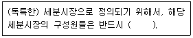
- 전체 소비자의 대부분을 대표해야 하고 결정적인 구매력을 지니고 있어야 한다.
- 공통의 욕구를 가지고 있고 마케팅활동에 유사하게 반응해야 한다.
- 상이한 욕구를 가지고 있고 마케팅활동에 유사하게 반응해야 한다.
- 성장잠재력이 있어야 하고, 기업수익증대에 기여해야 한다.
(정답률: 55%)

2. 로지스틱스(Logistics) 시스템의 주요기능 중 다음 설명에 해당되는 것은?
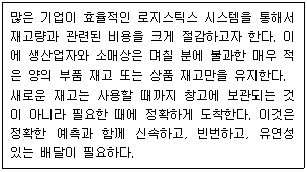
- 공급망 관리 - SCM(Supply Chain Management)
- 적시생산 시스템 - JIT(Just In Time)
- 전자 태그 - RFID(Radio frequency Identification)
- 고객관계 관리 - CRM(Customer Relationship Management)
(정답률: 65%)
3. 아웃바운드 텔레마케터의 판매관리 범위에 대한 설명으로 틀린 것은?
- 판매촉진 - 카탈로그, DM발송, E-mail마케팅 등의 활동
- 시스템관리 - 컴퓨터, 전화, 전산시스템관리 등의 활동
- 고객관리 - 고객분류, 고객니즈별 구매행위 분석, 고객 상담 관리 등의 활동
- 판매준비 - 판매전략 수립, 고객데이터 준비, 상담원교육, 광고, 안내 준비 등의 활동
(정답률: 60%)
4. 아웃바운드 텔레마케팅의 특성으로 옳은 것은?
- 인바운드 판매보다 고도의 마케팅기법이 요구된다.
- 인바운드 판매보다 텔레마케터의 자질에 큰 영향을 받지 않는다.
- 인바운드 판매보다 성과에 대한 부담이 적다.
- 인바운드 판매보다 판매경험에 큰 영향을 받지 않는다.
(정답률: 87%)
5. 가격차별화전략의 전제조건과 가장 거리가 먼 것은?
- 각 시장을 세분할 수 있어야 한다.
- 각 세분시장은 수요탄력성이 달라야 한다.
- 낮은 가격으로 판매하는 시장에서 비싼 가격으로 판매하는 시장으로 제품의 이전이 가능해야한다.
- 시장세분화의 비용보다 이익이 더 커야 한다.
(정답률: 62%)
6. 다음 중 효과적인 시장세분화의 요건이 아닌 것은?
- 변동가능성
- 측정가능성
- 접근가능성
- 유지가능성
(정답률: 59%)
7. 서비스의 특성 중 이질성을 해소하기 위한 방안으로 가장 적합한 것은?
- 맞춤 서비스를 제공한다.
- 다 지역 입지를 활용한다.
- 유형적 단서를 이용한다.
- 개인 정보원천을 활용한다.
(정답률: 69%)
8. 다음은 어떤 가격조정전략에 해당하는가?
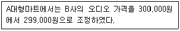
- 세분화 가격결정
- 심리적 가격결정
- 촉진적 가격결정
- 지리적 가격결정
(정답률: 90%)
9. 제품 수명주기 중 성장기의 특성과 가장 거리가 먼 것은?
- 제품의 판매가 대폭 증가하기 시작한다.
- 새로운 경쟁사들이 이익의 기회를 잡기 위해 시장에 진입한다.
- 광고의 일부를 제품 인지로부터 제품확산과 구매를 유도하기 위한 광고로 변경한다.
- 시장수정, 제품수정, 마케팅 믹스 수정 등의 전략을 고려한다.
(정답률: 70%)
10. 포지셔닝 전략의 수립과정에서 가장 먼저 수행하는 시장분석을 통해 얻을 수 있는 정보가 아닌 것은?
- 현재와 미래의 시장 내의 경쟁구조
- 시장 내 수요의 전반적인 수준 및 추세
- 세분시장의 크기와 잠재력
- 시장 내 소비자의 지리적 분포
(정답률: 73%)
11. 다음 중 소비자의 구매의사 결정과정을 바르게 나열한 것은?
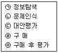
- (ㄱ) → (ㄴ) → (ㄷ) → (ㄹ) → (ㅁ)
- (ㄱ) → (ㄷ) → (ㄴ) → (ㄹ) → (ㅁ)
- (ㄴ) → (ㄱ) → (ㄷ) → (ㄹ) → (ㅁ)
- (ㄴ) → (ㄷ) → (ㄱ) → (ㄹ) → (ㅁ)
(정답률: 71%)
12. 다음 시장-제품전략 중 상품의 변화를 필요로 하지는 않지만, 기업으로 하여금 새로운 시장에서 새로운 고객을 찾는 활동을 필요로 하는 전략은?
- 시장침투전략
- 시장개발전략
- 제품개발전략
- 다각화전략
(정답률: 58%)
13. 인바운드 텔레마케팅의 상담절차를 바르게 나열한 것은?
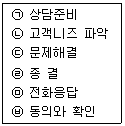
- (ㄱ) → (ㅁ) → (ㄴ) → (ㄷ) → (ㅂ) → (ㄹ)
- (ㄱ) → (ㄴ) → (ㅁ) → (ㄷ) → (ㅂ) → (ㄹ)
- (ㄱ) → (ㅁ) → (ㄴ) → (ㅂ) → (ㄷ) → (ㄹ)
- (ㄱ) → (ㄴ) → (ㄷ) → (ㅁ) → (ㅂ) → (ㄹ)
(정답률: 70%)
14. 다음 중 유통경로에 대한 설명으로 가장 적합한 것은?
- 제품 생산시 한 공정에서 다른 공정으로 이동하는 경로를 의미한다.
- 판매자가 소비자에게 상품을 배달할 때 제일 빠른 이동 경로를 의미한다.
- 상품이 생산자에서 소비자에게 직접 또는 중앙상인을 통하여 판매되는 경로를 의미한다.
- 상품이 대리점에서 제품 생산 본사로 전달되는 것을 의미한다.
(정답률: 93%)
15. 아웃바운드 텔레마케팅 대상고객 정보의 효율적인 관리 방법이 아닌 것은?
- 고객정보의 유출방지
- 고객정보의 지속적인 확충
- 고객속성에 따른 획일적 대응
- 고객정보 및 속성별 질적 개선
(정답률: 75%)
16. 소수의 판매점으로 선택적인 유통분배에 해당하는 소비재 유형은?
- 편의품
- 선매품
- 전문품
- 비탐색품
(정답률: 알수없음)
17. 제품의 분류 중 편의품에 대한 설명으로 틀린 것은?
- 소비자가 구매 전 최대한의 노력으로 구입하고자 하는 제품이다.
- 소비자들은 한 번 결정한 편의품 상표에 대한 강한 애호도를 지니고 있다.
- 편의품을 살 때에는 가장 편리한 위치에 있는 점포를 선택하는 경우가 많다.
- 소비자가 편리한 위치에서 제품을 구매하도록 하려면 개방적인 유통이 불가피하다.
(정답률: 87%)
18. 소비자가 서비스 구매의 의사결정과정에서 접할 수 있는 일반적인 위험의 유형에 관한 설명으로 틀린 것은?
- 재무적 위험 - 구매가 잘못되었거나 서비스가 제대로 수행되지 않았을 때 발생할 수 있는 금전적인 손실
- 물리적 위험 - 구매했던 의도와 달리 제대로 가능을 발휘하지 않을 가능성
- 사회적 위험 - 구매로 인해 소비자의 사회적인 지위가 손상 받을 가능성
- 심리적 위험 - 구매로 인해 소비자의 자존심이 손상 받을 가능성
(정답률: 71%)
19. 판매촉진의 수단 중 샘플(Sample)은 다음 중 어느 목표를 달성하는 데 가장 효과적인가?
- 구매가능성의 증대
- 기업이미지의 개발
- 인지부조화의 감소
- 긍정적 구전의 자극
(정답률: 62%)
20. 다음 ( )안에 들어갈 가장 알맞은 것은?(순서대로 A, B, C)
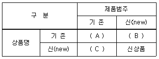
- 계열확장, 상표확장, 복수상표
- 복수상표, 계열확장, 상표확장
- 상표확장, 복수상표, 계열확장
- 계열확장, 복수상표, 상표확장
(정답률: 40%)
21. 다음이 설명하는 시장 커버리지 전략은?
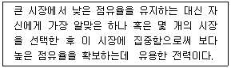
- 비차별화 마케팅
- 차별화 마케팅
- 집중화 마케팅
- 순차적 마케팅
(정답률: 78%)
22. 아웃바운드 텔레마케팅에서 판매의 효율성을 제고시키기 위한 방안과 가장 거리가 먼것은?
- 아웃바운드 텔레마케팅에서의 판매관리는 마케팅 4P와 4C(Connunication, Commerce, Community, Contents)를 적절히 전략적으로 활용한다.
- 원활한 판매활동과 고객만족을 실현하기 위해서 판매관리 데이터베이스의 정보시스템화를 촉진시켜야 한다.
- 고객과 원활히 대화할 수 있는 홈페이지를 구축하고 상품에 대한 정보교환 및 문의는 이메일을 통해서만 가능하게 한다.
- 아웃바운드 텔레마케팅분야에 적합한 상품을 적극적으로 개발한다.
(정답률: 72%)
23. 마케팅관리자가 적용 가능한 마케팅기회를 평가하는 방법으로 가장 적합한 것은?
- 단기적이기보다 장기적인 관점에서 모든 마케팅기회를 평가해야만 한다.
- 계량적(Quantitative)인 기준의 사용을 자제해야 한다.
- 다수의 기회가 존재할 경우 개별적으로 대안들을 평가해야 한다.
- 통제가 가능한 내부자원만을 살펴봐야 한다.
(정답률: 47%)
24. 다음 중 인구통계적 시장세분화 변수에 해당하는 것은?
- 개 성
- 성 별
- 사용상황(구매상황)
- 라이프스타일
(정답률: 알수없음)
25. BCG(Boston Consulting Group)매트릭스에 관한 설명으로 틀린 것은?
- 현금젖소(Cash Cow)는 투자를 확대하여 별(Star)의 범주로 이동시키는 것이 바람직하다.
- 개(Dog)는 부진제품을 폐기하고 적극적으로 자금을 회수하는 전략을 취하는 것이 바람직하다.
- 물음표(Question Mark)에 속하는 사업단위들은 시장점유율을 높이기 위해 많은 자금투자를 필요로 한다.
- 별(Star)에 속한 사업단위들은 높은 시장점유율로 인해 마진이 증대되기 때문에 연구개발, 새로운 시설투자를 위한 자금을 늘려야 한다.
(정답률: 45%)
2과목: 시장조사
26. 조사대상이 표본으로 추출될 확률이 알려져 있지 않아 인위적인 표본추출을 해야 하는경우 시간과 비용의 절감 효과는 있으나 표본오차의 추정이 불가능한 표본추출법은?
- 비확률표본추출법
- 확률표본추출법
- 층화표본추출
- 군집표본추출
(정답률: 88%)
27. 연구의 단위(Unit)를 혼동하여 집합단위의 자료를 바탕으로 개인의 특성을 추리할 때저지를 수 있는 오류는?
- 집단주의 오류
- 생태주의 오류
- 개인주의 오류
- 환원주의 오류
(정답률: 50%)
28. 총 학생 수가 2,000명인 학교에서 800명을 표집할 때의 표집률은?
- 20%
- 40%
- 80%
- 100%
(정답률: 74%)
29. 다음 설문문항의 오류에 대한 설명으로 옳은 것은?
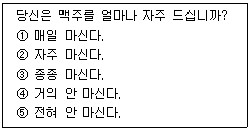
- 대답을 유도하는 질문을 하고 있다.
- 가능한 응답을 모두 제시하지 않고 있다.
- 응답항목들 간의 내용이 중복되고 있다.
- 하나의 항목으로 두 가지 내용을 질문하고 있다.
(정답률: 74%)
30. 다음 중 개방형 질문의 장점이 아닌 것은?
- 응답 가능한 모든 응답의 범주를 모를 때 적합하다.
- 응답자가 어떻게 응답하는가를 탐색적으로 살펴보고자 할 때 적합하다.
- 개인의 사생활이나 소득수준과 같이 밝히기를 꺼리는 민감한 주제에 보다 적합하다.
- 몇 개의 범주로 압축시킬 수 없을 정도로 쟁점이 복합적일 때 적합하다.
(정답률: 80%)
31. 다음 중 시장조사의 역할과 가장 거리가 먼 것은?
- 불확실성과 위험성 극대화
- 문제해결을 위한 조직적 탐색
- 고객의 심리적, 행동적인 특성 간파를 통한 고객만족 경영 기여
- 타당성과 신뢰성 높은 정보의 획득 및 의사결정능력 제고
(정답률: 87%)
32. 마케팅조사 절차 중 전반적인 조사골격의 설정, 자료수집절차와 자료분석기법들을 결정하는 단계는?
- 문제의 제기단계
- 마케팅조사 설계단계
- 자료수집단계
- 자료분석, 해석 및 이용단계
(정답률: 58%)
33. 다음 중 관련된 선행연구들이 부족하고 비교적 애매한 조사문제에 대한 기본 아이디어를 제공하기 위해 실시하는 조사로 가장 적합한 것은?
- 탐색적조사
- 기술적조사
- 인과관계조사
- 정량적조사
(정답률: 70%)
34. 다음 척도의 종류는?
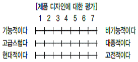
- 서스톤척도
- 리커트척도
- 거트만척도
- 의미분화척도
(정답률: 69%)
35. 비표준화 면접에 비해 표준화 면접이 가지는 장점이 아닌 것은?
- 반복적인 면접이 가능하다.
- 면접상황에 대한 적응도가 높다.
- 면접결과의 숫자화 측정이 용이하다.
- 조사자의 행동이 통일성을 갖게 된다.
(정답률: 27%)
36. 측정의 신뢰성을 향상시킬 수 있는 방법으로 가장 적합하지 않은 것은?
- 설문지의 문항별 설명을 명확히 하여 응답자별로 해석상의 차이가 발생하지 않도록 한다.
- 조사원들에 대한 교육을 강화하여 설문을 명확히 이해하도록 하고, 질문방식 등을 표준화시킨다.
- 성의가 없거나 일관성 없게 응답한 경우 설문지 자체를 폐기시킴으로써 위험요소를 없앤다.
- 중요한 질문의 경우 반복 질문을 피함으로써 혼선을 피한다.
(정답률: 53%)
37. 일반적인 자료수집방법의 선택기준이 아닌 것은?
- 필요한 자료수집의 다양성
- 수집된 자료의 객관성과 정확성
- 필요한 자료의 공개와 독창성
- 자료수집과정의 신속성과 비용
(정답률: 77%)
38. 내적 타당도를 위협하는 요소가 아닌 것은?
- 특정사건의 영향
- 피실험자가 변화하는 데 따른 영향
- 통계학적 회귀효과
- 반작용효과
(정답률: 75%)
39. 다음 중 탐색적 조사방법에 해당하지 않는 것은?
- 전문가 의견조사
- 문헌조사
- 실험연구
- 사례연구
(정답률: 55%)
40. 측정오차의 발생원인과 가장 거리가 먼 것은?
- 통계분석기법
- 측정시점의 환경요인
- 측정방법 자체의 문제
- 측정시점에 따른 측정대상자의 변화
(정답률: 43%)
41. 다음과 같은 특징을 지닌 연구방법은?
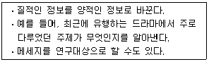
- 투시법
- 내용분석법
- 질적연구법
- 사회성측정법
(정답률: 53%)
42. 다음 중 전화면접과 대면면접의 비교 설명으로 틀린 것은?
- 전화면접법은 대면면접법에 비해 신속하게 면접을 실시할 수 있다.
- 전화면접법은 대면면접법에 비해 익명성이 보장될 수 없다.
- 전화면접법은 대면면접법보다 비용이 저렴하게 든다.
- 전화면접법은 대면면접법보다 면접대상이 지역적으로 분산되어도 면접이 용이하다.
(정답률: 72%)
43. 다음 중 2차 자료에 관한 설명으로 틀린 것은?
- 단기간에 자료를 쉽게 획득할 수 있다.
- 2차 자료는 1차 자료에 비해 상대적으로 비용이 적게 든다.
- 당면한 조사문제를 해결하기 위하여 직접 수집된 자료이다.
- 2차 자료는 1차 자료를 수집하기 전에 예비조사로 사용된다.
(정답률: 62%)
44. 다음 중 신디케이트 조사유형과 가장 거리가 먼 것은?
- 국가 인구 조사
- TV시청률 조사
- 소비자 패널조사
- 미디어 조사
(정답률: 60%)
45. 다음 중 척도에 관한 설명으로 틀린 것은?
- 척도의 수준이 올라갈수록 변수가 내포하고 있는 정보의 양이 증가한다.
- 척도의 수준이 올라갈수록 자료수집에 필요한 비용과 노력이 많이 소요된다.
- 척도의 수준이 올라갈수록 자료분석방법은 간단해진다.
- 변수측정에 필요한 비용이나 노력과 변수가 갖는 정보량은 서로 비례한다.
(정답률: 54%)
46. 다음 중 종단조사에 관한 설명으로 틀린 것은?
- 시점을 달리하며 동일한 현상에 대한 측정을 되풀이하는 조사방법이다.
- 각 기간 동안 일어난 변화에 대한 측정이 주된 과제가 된다.
- 특정조사대상들을 선정해 놓고 반복적으로 조사를 실시하는 조사방법이다.
- 모집단에서 임시적으로 추출된 표본으로부터 자료를 얻는다.
(정답률: 53%)
47. 개인의 사생활(Privacy)보호와 면접조사가 어려울 때 실시할 수 있는 조사방법으로 가장 적합한 것은?
- 조사원을 이용하여 질문지를 배포하고 우편으로 회수한다.
- 조사원을 이용하여 질문지를 배포하고 전화로 조사한다.
- 우편으로 질문지를 배포하고 전화로 조사한다.
- 조사대상자들을 한 자리에 모아 질문지를 배포하고 전화로 조사한다.
(정답률: 58%)
48. 설문지 작성시 질문문항의 순서에 대한 설명으로 틀린 것은?
- 설문주제의 오리엔테이션을 위한 개방형 질문은 먼저 한다.
- 쉽고 흥미를 끌 수 있는 질문부터 먼저 시작한다.
- 동일한 주제의 경우 단순한 질문에서 복잡한 질문으로 진행한다.
- 설문응답시 뒤로 갈수록 응답자기 산만해지므로 구체적인 질문을 먼저 한다.
(정답률: 56%)
49. 우편조사의 응답률에 영향을 미치는 요인과 가장 거리가 먼 것은?
- 응답집단의 동질성
- 응답자의 지역적 범위
- 질문지의 양식 및 우송방법
- 조사주관기관 및 자원단체의 성격
(정답률: 48%)
50. 크론바하 알파값(Cronbach’s Alpha)으로 계산하는 신뢰성 측정유형은?
- 반분법
- 재검사법
- 복수양식법
- 내적일관성법
(정답률: 19%)
3과목: 텔레마케팅관리
51. 다음 중 콜센터 관리자에게 요구되는 자질이 아닌 것은?
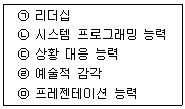
- (ㄱ), (ㄷ)
- (ㄴ), (ㄹ)
- (ㄷ), (ㅁ)
- (ㄹ), (ㅁ)
(정답률: 알수없음)
52. 동기부여 중심의 OJT 교육내용에 해당하지 않는 것은?
- 칭찬하기
- 신뢰감 표시
- 직무 축소
- 실패의 위로
(정답률: 91%)
53. 콜센터 업무의 세분화, 전문화로 인해 전체 과업이 분화되면 능률 도모를 위해 관련된 과업을 모아 수평적으로 그룹을 형성하는 콜센터 조직설계의 기본과정은?
- 일반화
- 부문화
- 조직도
- 집권화
(정답률: 48%)
54. 리더십의 유형을 의사결정 방식과 태도에 따라 구분할 때 의사결정 방식에 따른 구분이 아닌 것은?
- 독재형 리더십
- 민주형 리더십
- 직무중심형 리더십
- 자유방임형 리더십
(정답률: 알수없음)
55. Fidler의 상황이론에서 제시한 상황 우호성 변수와 가장 거리가 먼 것은?
- 리더와 구성원과의 관계
- 과업구조
- 지위권력
- 구성원의 성숙도
(정답률: 60%)
56. 성과주의 인사제도의 구성요소에 해당되지 않는 것은?
- 선별적 채용
- 성과주의 평가
- 공식적인 교육훈련
- 연공서열 위주의 승진
(정답률: 62%)
57. 전통적인 마케팅과 비교하여 텔레마케팅의 특징에 관한 설명으로 가장 적합하지 않은 것은?
- 텔레마케팅은 기업이 고객에게 전달하고자 하는 마케팅 커뮤니케이션 믹스를 최적화한 것이다.
- 텔레마케팅은 정보통신매체를 이용하는 쌍방향 의사소통 매체이다.
- 텔레마케팅은 최종 소비자들과 직접 대화를 통하여 생생한 소비자의 반응을 측정할 수 있다.
- 텔레마케팅은 경영자의 기업 활동에 초점을 맞춘 생산지향적 마케팅이다.
(정답률: 84%)
58. 통화 품질 관리자(QAA)의 업무능력과 가장 밀접한 관계가 있는 것은?
- 콜 분배 능력
- 세일즈 능력
- 경청 능력
- 인사관리 능력
(정답률: 58%)
59. 조직의 성과관리를 위한 개인평가방법을 상사평가방식과 다면평가방식으로 구분할 때 상사평가방식의 특징이 아닌 것은?
- 상사의 책임감 상실
- 간편한 작업 난이도
- 평가결과의 공정성 미흡
- 중심화·관대화 오류발생 가능성
(정답률: 54%)
60. 다음 중 콜센터의 생산성을 향상시킬 수 있는 방안과 가장 거리가 먼 것은?
- 콜센터의 인력(리더 및 상담원 등)에 대한 교육을 강화한다.
- 전반적인 업무환경(콜센터환경)을 개선한다.
- 텔레마케터 성과에 대한 인센티브를 강화한다.
- 콜센터 인력을 신규인력으로 대폭 교체한다.
(정답률: 84%)
61. 경영진이 조직의 목표와 성과향상을 성취하고 비전을 달성하기 위한 활동으로 적합하지 않은 것은?
- 비전과 목표를 전파할 수 있는 설명회 등을 개최한다.
- 전략수립단계에서 설정된 중장기 성과 목표와 전략 및 세부활동 등을 주기적으로 점검한다.
- 조직의 경영방침과 본부, 부서, 팀 등과 같은 조직 단위의 중장기, 단기 경영계획을 분리한다.
- 주주, 고객, 종업원, 파트너 등의 제반 이해관계자들과 접촉하는 시간을 마련하고 이해관계를 균형 있게 조절한다.
(정답률: 80%)
62. 다음 중 신규 콜센터 구축시 고려해야 하는 사항과 가장 거리가 먼 것은?
- 텔레마케팅의 목적과 목표
- 콜센터의 입지
- 텔레커뮤니케이션 기기의 적합성 및 운영능력
- 데이터베이스(DB) 활용 능력
(정답률: 24%)
63. 기업에서 인력을 모집하는 방법 중 기업내부의 인력을 대상으로 모집활동을 하는 내부 모집의 특징이 아닌 것은?
- 승진을 위한 조직 내부의 갈등이 생길 수 있다.
- 체계화된 관리자 육성프로그램이 필요하다.
- 직무에 대한 주인의식과 사기가 낮다.
- 모집과 관련된 비용을 절감할 수 있다.
(정답률: 92%)
64. 텔레마케터의 성과관리 방법으로 가장 적합하지 않은 것은?
- 포상은 많은 텔레마케터가 함께 나눌 수 있는 보상방법이 더 효과적이다.
- 모니터링은 교육 및 동기부여를 위한 긍정적인 피드백으로 활용되어야 한다.
- 개인의 성과는 팀의 성과에 연계되어 평가 되어야 한다.
- 성과에 따른 보상의 차등폭은 미미한 수준이어야 한다.
(정답률: 50%)
65. 업무 능력을 향상시키기 위한 텔레마케터 대상 훈련프로그램과 가장 거리가 먼 것은?
- 표현능력 개발
- 판매능력 개발
- 코칭능력 개발
- 정보활용능력의 개발
(정답률: 58%)
66. 성과 달성을 위한 목표 관리의 중점사항이 아닌 것은?
- 개인별 수행목표는 수치화로 명확해야 한다.
- 환경이 변하더라도 목표는 일관성이 있어야 한다.
- 조직의 목표와 개인의 목표가 연계성이 있어야 한다.
- 목표 수행시 상담원과 관리자 간의 의사소통이 필요하다.
(정답률: 64%)
67. 콜센터 성과변수를 고객성과의 업무성과로 구분할 때 조직내부의 업무수행과정에서 나타나는 업무성과에 해당하는 것은?
- 고객유지율 확립
- 고개만족도 향상
- 고객모니터링기능 강화
- 고객획득률 증가
(정답률: 50%)
68. 다음 중 통화 생산성 측정 지표와 가장 거리가 먼 것은?
- 고객접촉률
- 평균 응대속도
- 평균 콜처리 시간
- 통화 후 처리시간
(정답률: 22%)
69. 다음 중 조직의 특성에 관한 설명으로 틀린 것은?
- 효율적인 조직은 완전한 개방체계를 가진다.
- 조직은 외부환경과 구분될 수 있는 경계와 활동영역이 설정되어 있다.
- 조직은 정보, 에너지, 자원을 환경과 교환하는 개방체계이다.
- 개방체계와 폐쇄체계는 경계의 침투성에 의해서 구분될 수 있다.
(정답률: 57%)
70. 다음 중 리더십 특성이론에 관한 설명으로 틀린 것은?
- 리더의 개인적 자질에 의해 리더십의 성공이 좌우된다고 가정한다.
- 유능한 리더는 지적 능력, 성격, 신체적 조건 등에서 탁월해야 한다고 보았다.
- 우수한 리더 확보를 위해 선발에만 의존하지 않고 훈련 프로그램을 통해서도 양성할수 있다고 보았다.
- 개인적 특성이 리더십 발휘능력과 상관관계가 있다는 일관된 증거가 존재하지 않아 한계를 가지는 이론이라고 할 수 있다.
(정답률: 39%)
71. 일반적인 텔레마케팅의 전개과정을 바르게 나열한 것은?
- 기획 → 실행 → 측정 → 반응 → 평가
- 기획 → 측정 → 실행 → 평가 → 반응
- 기획 → 측정 → 실행 → 반응 → 평가
- 기획 → 실행 → 반응 → 측정 → 평가
(정답률: 64%)
72. 다음 중 텔레마케팅의 분류에 관한 설명으로 가장 적합하지 않은 것은?
- 텔레마케팅은 발신주체에 따라 인바운드 텔레마케팅과 아웃바운드 텔레마케팅으로 구분할 수 있다.
- 텔레마케팅은 운영주체에 따라 인하우스 텔레마케팅과 에이전시 텔레마케팅으로 구분할 수 있다.
- 텔레마케팅은 활동장소에 따라 기업 간 텔레마케팅과 소비자 텔레마케팅으로 구분 할 수 있다.
- 텔레마케팅은 고객유형에 따라 B to B 텔레마케팅과 B to C 텔레마케팅으로 구분 할 수 있다.
(정답률: 80%)
73. 다음 중 임금체계에 따른 분류방법으로 적절하지 않은 것은?
- 연공급
- 직무급
- 직능급
- 성과급
(정답률: 63%)
74. 텔레마케터 교육·훈련을 위한 역할연기(Role Playing)에 관한 설명으로 가장 적합하지 않은 것은?
- 조직의 응집력과 단결력을 강화할 수 있다.
- 텔레마케터의 자신감과 상황대응 능력을 향상시킬 수 있다.
- 실제 상황대로 스크립트를 가지고 연습함으로써 다양한 실전 경험을 할 수 있다.
- 텔레마케터는 응대업무와 관련한 개인적인 문제점을 구체적으로 피드백 받을 수 있다.
(정답률: 73%)
75. 콜센터 조직이 갖추어야 할 조직의 특성에 대한 설명으로 틀린 것은?
- 고객지향성 - 콜센터는 고객을 중심으로 고객에게 편리함, 신뢰성, 편익을 제공할수 있는 조직체이다.
- 유연성 - 고객과의 커뮤니케이션이 빈번하게 일어나는 공간이므로 조직구성원의 사고와 상황대응 능력이 유연해야 한다.
- 고품질성 - 고객의 정보는 곧 자산이며 관리와 보화의 책임성이 있으므로 이러한 관리를 통해 서비스품질을 높여야 한다.
- 신속·민첩성 - 콜센터의 생명은 고객니즈에 부응화되, 얼마나 신속ㆍ정확하게 대응하는 것이 중요한 요소이다.
(정답률: 58%)
4과목: 고객응대
76. CRM의 성과를 정량적 측면과 정성적 측면으로 구분할 때 정성적 측면에 해당하는 것은?
- 원가절감
- 고객유지
- 시장점유율
- 구전효과
(정답률: 43%)
77. 공감대 형성을 위한 화법에 관한 설명으로 틀린 것은?
- 고객의 신분에 맞는 존칭어를 사용한다.
- 고객의 말에 적극적인 동감 표현을 한다.
- 고객과의 공감을 형성하는 데 도움을 주는 공통화제를 선정하는 것이 중요하다.
- 전체 상담의 원활한 진행과 분위기를 위해 고객의 말을 아무 말 없이 끝까지 듣는다.
(정답률: 89%)
78. 다음 중 연세가 많은 고객에 대한 효과적인 상담방법으로 가장 거리가 먼 것은?
- 호칭에 신경을 쓰도록 한다.
- 공손하게 응대하고 질문에 정중하게 답한다.
- 순발력 있고 빠른 속도로 응대한다.
- 고객의 의견을 존중한다.
(정답률: 87%)
79. 고객의 유형 중 단호한 형(Decisive)의 고객상담 요령과 가장 거리가 먼 것은?
- 고객에게 될 수 있으면 상담원이 말이 많이 한다.
- 질문에 직접적인, 간결한, 사실적인 대답을 한다.
- 변명을 하지 말고 설명을 간결하게 하고 해결책을 제공한다.
- 상황의 해결을 목표로 한 구체적 질문을 하고 서비스한다.
(정답률: 62%)
80. CRM의 특성에 관한 설명으로 틀린 것은?
- CRM은 장기적 이윤을 추구한다.
- CRM은 고객 지향적인 경영 방식이다.
- CRM은 고객과 기업의 상호이익적 신뢰경영이다.
- CRM은 일방형 커뮤니케이션을 지향한다.
(정답률: 65%)
81. 다음 중 듣기의 일반적인 과정을 바르게 나열한 것은?
- 응답 → 듣기 → 해석 → 평가
- 듣기 → 해석 → 평가 → 응답
- 듣기 → 평가 → 응답 → 해석
- 응답 → 듣기 → 평가 → 해석
(정답률: 50%)
82. 다음 중 의사소통의 장애요인이 아닌 것은?
- 지위의 현격
- 비공식 조직
- 언어상의 장애
- 시간상의 압박
(정답률: 55%)
83. 고객에게 제품 또는 서비스를 설명하는 방법으로 가장 적합하지 않은 것은?
- 고객이 가장 관심을 갖고 있는 부분을 파악하고 집중하는 것이 필요하다.
- 자신의 업무적 지식을 과시하는 듯한 대화를 통하여 관계를 불편하게 해서는 안 된다.
- 고객의 반응과 관계없이 한마디, 한마디를 정확하게 포인트만을 전달한다.
- 요점을 간결하게 전달하여 시간적 낭비를 줄인다.
(정답률: 67%)
84. 고객불만처리에 대한 설명으로 적합하지 않은 것은?
- 경청 - 선입관을 버리고, 끝까지 잘 들어준다.
- 공감 - 고객의 입장에서 기분을 이해하고 공감한다.
- 설득 - 제품 또는 서비스에 잘못이 없음을 정확하게 알린다.
- 사과 - 회사를 대표해서 정중하게 사과한다.
(정답률: 77%)
85. 인바운드 문의상담에 임하는 올바른 자세가 아닌 것은?
- 신뢰감을 주어야 한다.
- 문의내용에 대한 정확한 이해와 상황대응이 이루어져야 한다.
- 긴장과 경계심을 가지고 임해야 한다.
- 시간과 내용에 있어서 적정성을 가져야 한다.
(정답률: 85%)
86. 기업의 하부구조(판매원 등)가 CRM의 실패원인이 되는 이유로 가장 적합한 것은?
- 고객의 관점보다는 개인의 매출성과에 더 무게를 두기 때문이다.
- CRM은 고객과의 관계형성에 더 신경을 쓰기 때문이다.
- CRM은 판매를 목적으로 하지 않기 때문이다.
- CRM은 마케팅 프로그램이라기보다는 광범위한 기업과정의 일환이기 때문이다.
(정답률: 56%)
87. CRM을 통해 기업이 얻을 수 있는 성과와 가장 거리가 먼 것은?
- 우수고객 유지
- 직원능력개발
- 교차판매
- 비용절감
(정답률: 50%)
88. 고객상담시 고객과의 공감대를 형성하는 방법과 가장 거리가 먼 것은?
- 공통적인 화제로 자연스럽게 대화한다.
- 인사는 격식에 따라서 위엄 있게 한다.
- 고객을 진심으로 칭찬한다.
- 고객의 신분에 맞는 존칭어를 구사한다.
(정답률: 84%)
89. 텔레마케터가 고객과의 전화에서 활용할 수 있는 음성연출로 적합하지 않는 것은?
- 음성의 크고 작음
- 말의 빠르고 느림
- 말의 색깔과 느낌
- 억양의 특이한 악센트
(정답률: 58%)
90. CRM의 발전단계를 도입준비, 도입, 확산, 통합의 4단계로 구분할 때 CRM시스템 구축과 기업전략을 중심으로 고객을 관리하는 단계는?
- CRM 도입준비
- CRM 도입
- CRM 확산
- CRM 통합
(정답률: 20%)
91. 성공하는 텔레마케터가 되기 위해 가져야 할 태도로 적합하지 않은 것은?
- 항상 고객의 문제를 도와주고 해결해주는 전문가라는 자긍심을 갖는다.
- “고객과의 약속은 반드시 지킨다”라는 철학을 갖고 업무에 임한다.
- 자신의 상담능력을 향상시키기 위해 자기계발에 최선을 다한다.
- 고객 불만의 수용과 처리에 있어 상담자 자신의 권한이 제한되어 있으므로 실제적인 처리보다는 일차적인 응대에만 최선을 다한다.
(정답률: 84%)
92. 다음 중 충실한 자료와 증거를 제시하고 애매한 일반화는 피하는 것이 효과적인 고객의 유형은?
- 추진형
- 표현형
- 온화형
- 분석형
(정답률: 85%)
93. 잘못된 서비스로 인하여 고객에게 사과를 해야 할 때 취할 자세로 가장 거리가 먼 것은?
- 고객의 기분을 인정하고, 책임을 공유할 것임을 표현한다.
- 고객에 대한 배려와 관심을 보여주고, 어떻게 해결하면 좋을까를 물어본다.
- 고객에게 사과하고 끝낸다.
- 진지하게 사과를 한 후 계속해서 고객과 거래할 기회를 달라고 요청한다.
(정답률: 67%)
94. 다음 중 CRM의 등장배경과 가장 거리가 먼 것은?
- 고객확보경쟁의 증가
- 고객기대수준의 상승
- 고객로열티의 증가
- 고객다양성의 증가
(정답률: 60%)
95. 다음 중 대인커뮤니케이션의 구성 요소가 아닌 것은?
- 상품과 가격
- 발신자와 수신자
- 기호화와 해독
- 메시지와 채널
(정답률: 47%)
96. 성공적인 텔레마케팅을 위한 세일즈 화법과 가장 거리가 먼 것은?
- 고객과 보조를 맞추어가며 응대한다.
- 고객이 계속 말하고자 할 때는 적절히 중단시킨다.
- 고객이 필요로 하는 정보를 제공해준다.
- 고객의 말을 성의 있게 경청한다.
(정답률: 71%)
97. DB마케팅의 대상 및 상품별 전략의 연결로 틀린 것은?
- 기존고객 - 기존상품 - 고객활성화 전략
- 기존고객 - 신규상품 - 교차판매 전략
- 잠재고객 - 기존상품 - 고객유지 전략
- 잠재고객 - 신규상품 - 신규고객확보 전략
(정답률: 알수없음)
98. 고객응대시 요구되는 지식 중 구매고객층, 구매목적, 구매시기 등의 내용이 포함된 것은?
- 고객시장에 관한 지식
- 고객의 구매심리에 관한 지식
- 제품 및 서비스 지식
- 생산, 유통과정과 품질에 관한 지식
(정답률: 36%)
99. 다음 중 운영CRM 시스템에 포함되지 않는 것은?
- 마케팅자동화 시스템
- 영업자동화 시스템
- 고객서비스자동화 시스템
- 고객상호작용센터
(정답률: 42%)
100. 고객과의 전화를 통한 상담시 취해야 하는 행동으로 올바르지 못한 것은?
- 고객의 이해를 돕기 위해 통화의 끝부분에서 요점을 요약하는 것이 좋다.
- 사전에 고객에게 전달할 메시지를 준비한다.
- 고객이 원하는 것을 제공할 수 없을 때는 회사정책을 인용한다.
- 더 나은 서비스를 제공하기 위해 지속적인 모니터링을 한다.
(정답률: 95%)